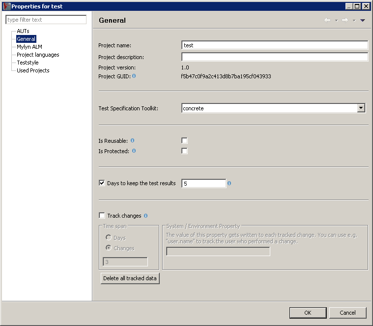

3.5.2 Editing the Project and AUT properties
You can open the Project properties dialog (3.4) via:
Figure 3.4: Project Properties Dialog
|

|
The Project properties dialog lets you see and, in some cases, edit information about:
- the Project in general 3.5.2.1.
- the Project languages 3.5.2.3.
- the AUT's 3.5.2.4.
- the Projects that you have reused in this Project 3.6.
- the connection to application lifecycle management (ALM) repositories in this Project 3.22.4.1.
Subsections
Copyright BREDEX GmbH 2014. Made available under the Eclipse Public License v1.0.